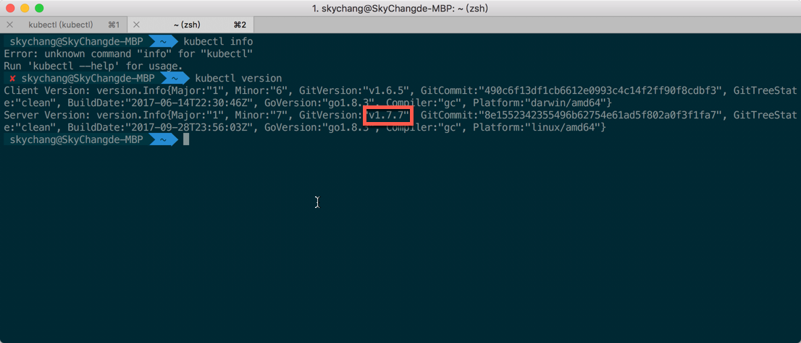
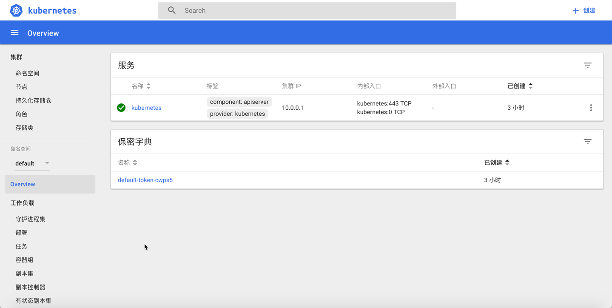

問題
剛好一段時間跑去研究別的東西，一陣子沒來關注 Kubernetes，然後今天在做 Lab 的時候，好死不死，當我快樂的建立完 ACS 的時候，想透過 UI 去看儀表板的時候，竟然給我一片空白 (翻桌)，然後用偵錯工具看，一堆 404 …
解法
其實也談不上什麼解法，回家有空後，翻了官網，竟然就大辣辣的寫在那邊 裡面有提到，這是 Kubernetes 1.7.6 後的問題，後來稍微看了討論串，保哥 Will 也在裡面詢問了，到底是哪邊的問題，但官方也沒有正面的回覆，
( 反正未來會修就是了 ) 而這個 Dashboard 的 issue ，截至官網到 1.7.1 版本，都還沒修正
The shortcut http://localhost:8001/ui is not working with the latest version of Dashboard
總之，官方的解法很簡單，當我們原本打 http://127.0.0.1:8001/ui 後，會導向到這個網址 http://127.0.0.1:8001/api/v1/namespaces/kube-system/services/kubernetes-dashboard/proxy 我們只要在這個的後面加上 / 就解了…如這樣 : http://127.0.0.1:8001/api/v1/namespaces/kube-system/services/kubernetes-dashboard/proxy/
另外，稍微補上一下查看版本的資訊，我們建立的版本可以透過底下指令查看到
1 | kubectl version |
所以目前版本是 1.7.7 剛好符合中標 XDD

加上 / 後，就可以正常進入了
